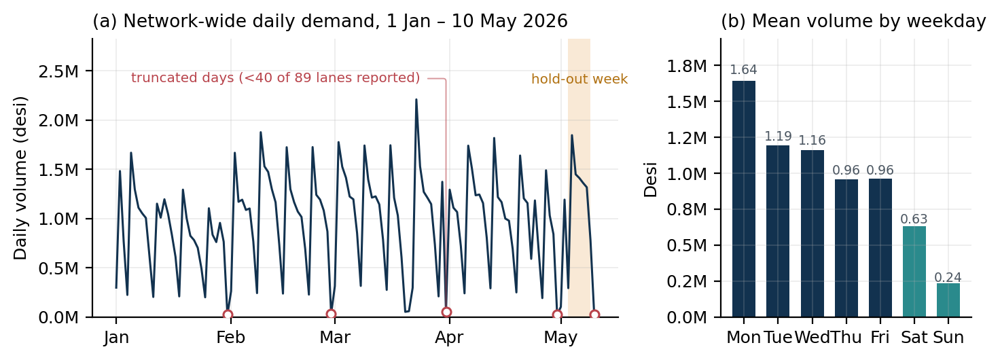
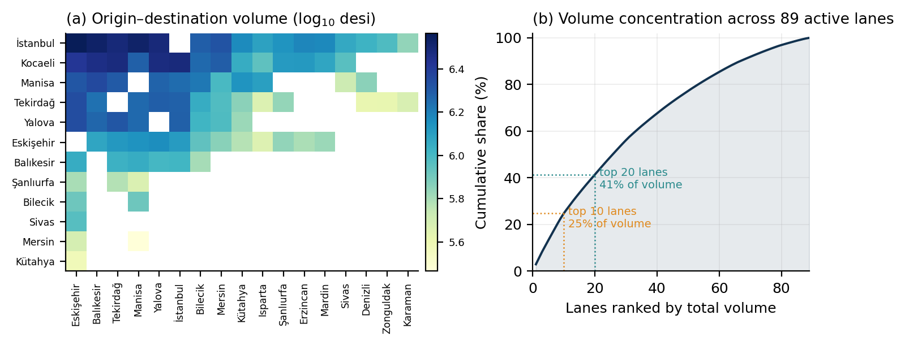
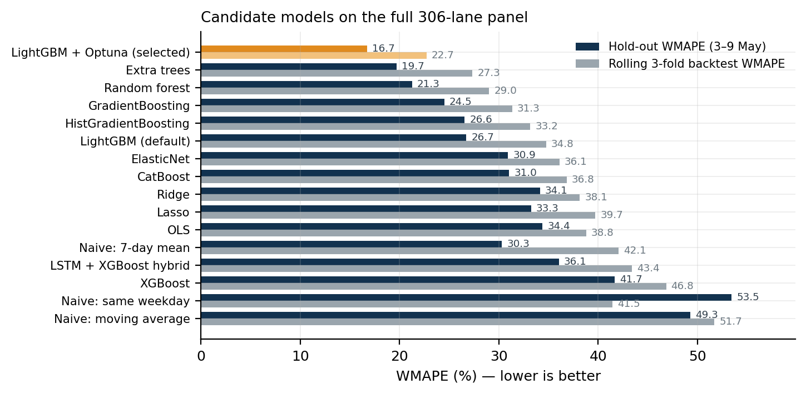
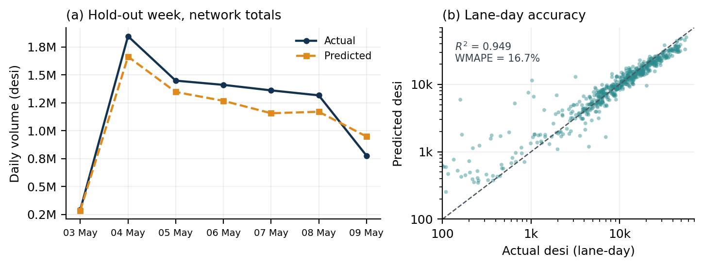
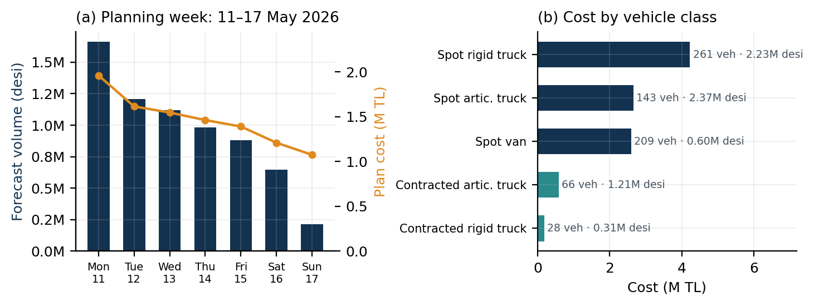

Recursive Gradient-Boosted Demand Forecasting and Mixed-Fleet Cost Optimization for a Parcel Line-Haul Network
Salih Enes Metin • MSc Data Science, Gazi University • 2026
Abstract. Parcel carriers must commit line-haul capacity days before the freight that will fill it is known. This paper reports an end-to-end system that forecasts inter-hub parcel volume for a seven-day horizon and converts those forecasts into a least-cost vehicle plan over a mixed fleet of contracted and spot vehicles. The data cover a Turkish line-haul network of 18 transfer centres, 89 active lanes and 130 days of daily volume measured in desi (a Turkish dimensional-weight unit). Demand is modelled on a complete 306×129 lane-day panel in which unobserved lane-days are treated as structural zeros, giving a 72.7 % zero-inflated target. A LightGBM regressor with a Tweedie objective, tuned by 500 Optuna trials against a rolling three-fold backtest, reaches a hold-out WMAPE of 16.7 % and R² = 0.949 on 2,142 lane-days, improving on the best naive benchmark by 44.8 % and on the same learner with default hyperparameters by 37.4 %. Model choice is made by a blended score that combines hold-out and rolling-backtest error, which demotes benchmarks that happen to suit the final week by as many as five places. Forecasts are generated recursively over an eight-step horizon that bridges a corrupted final observation day. The resulting 623 lane-day volumes are allocated to four vehicle classes by a mixed-integer program that first exhausts the fixed contracted fleet and then minimises spot cost subject to a 10 % minimum-fill rule, producing a plan of 707 vehicle-days at 10.25 M TL — 21.5 % below the cheapest single-class reference plan and 3.7 % below the same optimiser run without the contracted fleet. Because both objective and constraints separate by lane-day, the program decomposes into 589 independent integer covering problems and solves in 1.2 s. We report the full comparison against fifteen alternative forecasters, an anatomy of the cost structure, and the failure modes that remain — most notably a −7.3 % volume bias that a symmetric loss function has no reason to correct.
1. Introduction
A line-haul network moves parcels between transfer centres on fixed lanes. Every night, each lane must be assigned enough vehicle capacity to clear the freight that will actually arrive, and that decision is taken before the freight exists. Commit too little and parcels miss their service window; commit too much and the carrier pays for empty cubic metres. The commitment is made worse by the structure of the fleet: part of it is contracted on long-term terms and is cheap but fixed in size and lane assignment, while the rest is bought on the spot market at roughly 1.3–1.8× the daily rate and 1.9–3.0× the per-kilometre rate. Planning therefore has two coupled halves — predict the volume, then buy the cheapest feasible capacity for it.
This paper describes a system that performs both halves for a Turkish parcel network and reports what worked, what did not, and what the numbers actually support. The forecasting half is a supervised regression over a complete lane-day panel rather than a collection of per-lane time series; the optimisation half is a two-stage mixed-integer program over four vehicle classes. The two halves are joined by a recursive forecasting loop, because the planning horizon starts one day after the last usable observation and the model consumes its own lagged predictions from the second step onwards.
Three aspects of the problem shaped the design and are, we think, the transferable part of the work.
The target is zero-inflated by construction, not by accident. Only 89 of the 306 ordered centre pairs ever carry freight. Fitting only those 89 lanes discards the information that the other 217 are structurally empty; fitting all 306 turns 72.7 % of the training rows into zeros. We train on the full grid — which lets the model learn the network's shape — but forecast only on lanes with observed history, which keeps the delivered plan free of phantom lanes. This asymmetry between the training and inference grids is deliberate; we did not run a controlled A/B of the two panel constructions, so we present it as a design argument rather than a measured effect.
A single hold-out week flatters the naive benchmarks. A seven-day trailing mean ranks seventh of sixteen on the final week — ahead of ElasticNet, CatBoost, Ridge, Lasso and OLS — and then falls to twelfth under a three-fold rolling backtest, as its hold-out error of 30.3 % degrades to 42.1 %. The top of the ranking is stable across both protocols, but that is a result rather than an assumption. We select on a blend of the two, plus a bias penalty, and report both components so the reader can apply their own weighting.
The optimisation is large but separable. The lane-day allocation problem looks like a 2,356-variable integer program, but neither the objective nor the constraints couple two lane-days, so it decomposes into 589 independent integer covering problems. This is why a brute-force enumeration and a CBC branch-and-bound reach an identical cost, and why the heuristic that sits between them is 0.09 % worse: the instances are small enough that optimality is cheap. Recognising the separability is more valuable than the choice of solver.
2. Related work
Demand forecasting for logistics sits between classical time-series forecasting and supervised learning on panel data. The intermittency of lane-level freight — long runs of zeros punctuated by large shipments — is the defining feature that classical exponential smoothing handles poorly; Croston's method [1] and its bias-corrected variants [2] were developed precisely for this regime. Our lane-day series are intermittent in exactly this sense, but the intermittency is dominated by a strong weekly cycle (Sunday volume is 14 % of Monday volume) and by network-level structure that per-series methods cannot see.
The M5 competition [3] established that gradient-boosted decision trees fitted to a pooled panel with engineered calendar and lag features outperform per-series statistical models on exactly this class of problem — retail-scale, hierarchical, intermittent, weekly seasonal. We follow that template. LightGBM [5] is our primary learner, with XGBoost [6] and CatBoost [7] as comparators, and scikit-learn [8] supplying the linear and bagged-tree baselines. Hyperparameters are tuned with Optuna's TPE sampler [9]. For a non-negative, zero-inflated, right-skewed target the Tweedie deviance [10] is the natural loss, and the tuner selected it over squared and absolute error in both tuning runs we performed. Accuracy is reported as WMAPE, whose scale-freeness and behaviour on zero-valued actuals are discussed by Hyndman and Koehler [4].
The allocation half is a fleet-sizing and capacity-assignment problem rather than a routing problem: lanes are fixed, so the classical vehicle routing formulations [11] do not apply, and what remains is closer to a cutting-stock or bin-covering program. We solve it with CBC [13] through the PuLP modelling layer [14], and compare against an adaptive large neighbourhood search in the style of Ropke and Pisinger [12] to check whether the exact solver's structure is worth its cost.
3. Problem setting and data
3.1 Network and units
The network comprises 18 transfer centres, of which 12 dispatch freight and 17 receive it. Volume is measured in desi, the Turkish dimensional-weight unit (length × width × height in cm, divided by 3000), which is the billing and capacity unit used throughout the industry; vehicle capacities are quoted in the same unit, so volume and capacity are directly commensurable and no conversion is needed anywhere in the pipeline.
Four tables are supplied. Daily lane volume covers 1 January to 10 May 2026 (10,770 lane-day records, 124.97 M desi in total). Centre coordinates give latitude and longitude for all 18 centres, from which we compute great-circle distances. A vehicle table lists the capacity and the four-part cost structure of each of four classes. A contracted-fleet table lists 14 vehicles per day pre-assigned to 12 specific lanes.
| Property | Value |
|---|---|
| Transfer centres | 18 |
| Centres dispatching / receiving freight | 12 / 17 |
| Ordered centre pairs (possible lanes) | 306 |
| Lanes with any observed volume | 89 |
| Observation window | 1 Jan – 10 May 2026 |
| Days observed | 130 |
| Lane-day records | 10,770 |
| Total volume | 124,968,086 desi |
| Median observed lane-day volume | 9,449 desi |
| Maximum lane-day volume | 67,808 desi |
| Share of volume on the 10 busiest lanes | 24.8 % |
| Share of volume on the 20 busiest lanes | 41.4 % |
| Mean great-circle lane length | 491 km (46–1,208) |
Table 1. The line-haul network as supplied.
| Class | Capacity (desi) | Contracted | Spot | ||
|---|---|---|---|---|---|
| Daily (TL) | Per km | Daily (TL) | Per km | ||
| Articulated truck (Tır) | 22,400 | 7,000 | 13 | 11,700 | 25 |
| Rigid truck (Kamyon) | 12,000 | 5,000 | 10 | 7,638 | 21 |
| Light truck (Hafif Kamyon) | 7,200 | 5,000 | 10 | 8,750 | 20 |
| Van (Kamyonet) | 5,600 | 3,750 | 6 | 4,750 | 18 |
Table 2. Vehicle classes and their cost structure. Cost of one vehicle on one lane-day is a fixed daily charge plus a per-kilometre charge; spot daily charges are 1.3–1.8× and spot per-kilometre rates 1.9–3.0× the contracted equivalent. Capacities are representative values supplied with the problem.
3.2 What the data look like
Figure 1 shows the two dominant patterns. Volume follows a hard weekly cycle: Monday averages 1.64 M desi and Sunday 0.24 M desi, a 6.9× ratio, with a monotone decay from Monday through Saturday. Any model that does not represent day-of-week explicitly is competing against a very strong seasonal naive benchmark.
Figure 1(a) also exposes a data-quality problem we did not expect. Five days in the series report fewer than 40 of the 89 active lanes: 31 January, 28 February, 31 March, 30 April and 10 May. Four of these are month-ends and the fifth is the final day of the extract. The pattern is consistent with an extraction that truncates at period boundaries rather than with genuine near-zero demand. Only 10 May was excluded from training in the delivered pipeline, because it is the day immediately preceding the forecast window and its corruption would propagate directly into every lag feature at inference time. The four month-end days remain in the training panel and constitute label noise that we quantify in Section 6 but did not remove.

Figure 2 shows the network's other structural property: volume is concentrated but not extremely so. İstanbul and Kocaeli dominate as origins, and the top ten lanes carry 24.8 % of all volume, but the tail is long enough that a plan optimised only for the head would miss a large share of cost.

4. Method
4.1 Panel construction
Let C be the set of 18 centres and L = {(o, e) ∈ C×C : o ≠ e} the 306 ordered pairs. We build the training panel on the full Cartesian product L × D, where D is the set of 129 usable days (1 January – 9 May, excluding 10 May), and set yo,e,t = 0 wherever the source table has no record. This yields 39,474 rows of which 72.7 % are zero.
The alternative — restricting the panel to the 89 lanes that carry freight — was implemented and evaluated. Training on the full grid is what allows the model to learn that a lane's identity, not merely its history, predicts its volume: the categorical origin, destination and route features become informative only when the model has seen the empty pairs. At inference time we invert the choice and predict only on the 89 observed lanes. Predicting on all 306 would emit capacity requests for lanes the carrier does not operate, which is worse than useless in a plan that a dispatcher has to execute.
4.2 Features
Fifty-eight features are computed per lane-day, in five families (Table 3). Every history-derived feature is computed on values shifted by at least one day within its own lane, so no feature at time t can see yt. The route-share features deserve a note: a lane's share of its origin's total outbound volume is a strong signal, but the single-day version is noisy on low-volume lanes, so we compute both the one-day and the seven-day rolling variant and let the model choose. Distances are great-circle (Haversine) between centre coordinates and enter both linearly and as log(1 + d).
| Family | n | Contents |
|---|---|---|
| Calendar | 8 | day-of-week, day, ISO week, month, weekend flag, and the categorical origin, destination and route identifiers |
| Holiday & special day | 24 | national holiday flags and names, day-before / day-after, signed distance to the nearest holiday, bridge-day and long-weekend flags, plus the same apparatus for commercial gift days (Valentine's, Mother's Day, Singles' Day, Teachers' Day, New Year's Eve) |
| Lag & rolling | 22 | lags 1, 2, 3, 7, 14, 21, 28; rolling mean over 3/7/14 days; rolling std/max/min over 7; expanding lane mean; EWM with spans 7 and 14; same-weekday mean over 4 weeks; week-on-week difference; momentum ratio; 28-day non-zero rate; days since last positive volume; expanding lane×weekday mean |
| Route aggregate | 10 | origin and destination daily totals at lags 1 and 7 and their 7-day rolling means; the lane's share of origin and destination volume, in one-day and seven-day forms |
| Distance | 2 | great-circle kilometres and its logarithm |
Table 3. Feature families. Categorical columns are ordinal-encoded for tree models and one-hot encoded with standardised numerics for linear models.
4.3 Evaluation protocol
The primary metric is the weighted mean absolute percentage error,
which is defined when individual actuals are zero — unavoidable here — and weights lanes by the volume they contribute, which is what the cost function cares about. We also report MAE, RMSE, sMAPE, R² and the signed volume bias 100 (Σ ŷi − Σ yi) / Σ yi.
Two evaluations are run for every candidate. The hold-out is the final seven days, 3–9 May 2026, comprising 2,142 lane-days. The rolling backtest refits the model three times on expanding training windows with seven-day validation periods ending on 25 April, 2 May and 9 May. Model selection uses a blended score,
where the last two terms are tie-breakers that penalise systematically biased and absolutely inaccurate models at the margin. The blend matters mainly in the middle of the ranking, where models that fit the final week well are separated from models that generalise.
4.4 Hyperparameter optimisation
LightGBM is tuned with Optuna's TPE sampler over 500 trials with median pruning. The search space spans the objective (squared error, absolute error, Tweedie), 50–600 trees, learning rate 0.005–0.3 on a log scale, 8–128 leaves, depth 3–12, minimum child samples 5–100, row and column subsampling 0.5–1.0, L1 and L2 regularisation over eight orders of magnitude, minimum split gain 0–1, and the Tweedie variance power over 1.1–1.6.
The tuning objective is deliberately not the panel-wide WMAPE. It is the mean, across the three backtest folds, of the WMAPE computed on the rows that (i) appear in the source table — rather than being structural zeros added by the panel — and (ii) carry a predicted volume above the 50-desi reporting threshold used in the delivered file. Tuning against the panel-wide error would let a model buy improvements by predicting the structural zeros ever more precisely, which is free accuracy on rows nobody plans against. Restricting the objective to the rows that reach the plan aligns the tuner with the decision. The best trial (number 219 of 500) reached 22.11 %; its parameters are in Table 7.
4.5 Recursive forecasting
The planning week is 11–17 May 2026, but the last usable observation is 9 May. The model therefore forecasts eight steps, beginning on 10 May, and the 10 May predictions — which exist only to supply lag-1, rolling and EWM features for 11 May — are dropped before delivery. At each step the predicted values are appended to the history panel, all features are recomputed from the extended panel, and the next day is predicted. Predictions are clipped at zero. This bridging is what allows the corrupted 10 May observation to be discarded without leaving a hole in the lag structure.
The delivered file rounds to two decimals and drops rows at or below 50 desi. In the final run no row fell below that threshold: all 89 × 7 = 623 lane-days survive.
4.6 Fleet allocation
Let L index the 623 lane-days in the plan, V the four vehicle classes, qℓ the forecast volume on lane-day ℓ, κv the capacity of class v, and dℓ the lane's great-circle distance. The cost of one vehicle of class v on lane-day ℓ is
for spot (s) and contracted (r) sourcing respectively, with f the daily fixed charge and k the per-kilometre rate from Table 2.
Stage 1 — contracted fleet. The contracted fleet is a sunk commitment: its composition, lane assignment and count Rℓv are given and cannot be changed. On each lane-day we therefore consume it first, filling nrℓv = min(Rℓv, ⌈qℓ/κv⌉) vehicles and charging only those that carry load. The residual is rℓ = max(0, qℓ − Σv κv nrℓv).
Stage 2 — spot purchase. With xℓv ∈ ℤ≥0 the number of spot vehicles of class v bought for lane-day ℓ:
s.t. Σv∈V κv xℓv ≥ rℓ ∀ℓ ∈ L (2)
Σv∈V 0.1 κv xℓv ≤ rℓ ∀ℓ : rℓ ≥ minv 0.1κv (3)
Constraint (2) is the service requirement: the whole forecast must move. Constraint (3) is the carrier's minimum-fill rule — no spot vehicle may be dispatched below 10 % of its capacity — expressed as an aggregate bound so that the optimiser cannot buy a fleet whose floors alone exceed the load. On lane-days whose residual is smaller than 10 % of the smallest vehicle the constraint is infeasible by construction and is relaxed for that lane-day only; this occurs rarely and is reported. Once counts are fixed, load is distributed by giving each selected vehicle its 10 % floor and then filling vehicles to capacity in turn.
Only 589 of the 623 lane-days need spot capacity, giving 589 × 4 = 2,356 integer variables and 1,178 constraints. Neither (1) nor (2)–(3) couples two lane-days, so the program separates into 589 independent integer covering problems — a fact that Section 5.4 exploits to explain the solver comparison. We solve the joint program with CBC through PuLP.
5. Results
5.1 Forecast accuracy
Table 4 and Figure 3 give the full comparison. The tuned LightGBM reaches a hold-out WMAPE of 16.74 % with R² = 0.949; restricted to the observed-lane rows above the reporting threshold — the 614 rows that a planner actually sees — WMAPE is 16.21 %. Its rolling-backtest WMAPE is 22.71 % (folds: 20.38, 29.70, 18.04).
Against the strongest naive benchmark (a seven-day trailing mean, 30.31 % hold-out) this is a 44.8 % relative reduction; against the same LightGBM with default hyperparameters (26.72 %) it is 37.4 %. The two protocols agree on the top of the table — the tuned model leads on both, and the first six places are identical — but they disagree materially below it. The seven-day trailing mean is the clearest case: at 30.31 % it beats five fitted models on the hold-out week, then falls five places once the rolling folds are included, because a single week cannot distinguish a benchmark that is genuinely competitive from one that happens to suit the week it was measured on. Extra Trees is the best of the untuned learners under both protocols, but its hold-out-to-rolling spread of 7.7 points is wider than the tuned model's 6.0, which is the kind of instability the blended score is meant to price. The seasonal naive benchmark is the weakest of all at 53.46 %, which is a direct consequence of the truncated month-end days: a same-weekday lookup that lands on 31 March predicts near-zero volume for the following week.

| Model | Hold-out WMAPE | Rolling WMAPE | MAE | R² |
|---|---|---|---|---|
| LightGBM + Optuna (selected) | 16.74 | 22.71 | 660 | 0.949 |
| Extra Trees | 19.68 | 27.35 | 776 | 0.944 |
| Random Forest | 21.26 | 29.02 | 839 | 0.933 |
| Gradient Boosting | 24.51 | 31.35 | 966 | 0.921 |
| HistGradientBoosting | 26.56 | 33.17 | 1,047 | 0.918 |
| LightGBM (defaults) | 26.72 | 34.78 | 1,054 | 0.920 |
| ElasticNet | 30.92 | 36.12 | 1,219 | 0.906 |
| CatBoost | 31.03 | 36.82 | 1,224 | 0.892 |
| Lasso | 33.25 | 39.71 | 1,311 | 0.904 |
| Ridge | 34.13 | 38.15 | 1,346 | 0.912 |
| OLS | 34.40 | 38.78 | 1,357 | 0.913 |
| LSTM + XGBoost hybrid | 36.06 | 43.42 | 1,422 | 0.874 |
| XGBoost | 41.69 | 46.85 | 1,644 | 0.836 |
| Naive: 7-day trailing mean | 30.31 | 42.08 | 1,195 | 0.866 |
| Naive: moving average | 49.27 | 51.71 | 1,943 | 0.695 |
| Naive: same weekday | 53.46 | 41.47 | 2,108 | 0.554 |
Table 4. Forecast accuracy on the 2,142 lane-days of the hold-out week and under the three-fold rolling backtest. All models share the same 58 features and the same panel. Errors are percentages; MAE is in desi.
Figure 4(b) shows where the error lives. Above roughly 5,000 desi the predictions sit tightly on the diagonal; the scatter widens sharply below 1,000 desi, where the Tweedie objective's variance assumption and the intermittency of small lanes interact. Since WMAPE weights by volume and the cost function is driven by the large lanes, this is the right place for the residual error to be — but it does mean per-lane relative accuracy on small lanes is poor and should not be quoted.

The one clear defect is visible in Figure 4(a). The model under-predicts total volume by 7.27 %, but the error is not a uniform level shift: it under-predicts on all six weekdays, worst on Thursday at −15.0 %, and then over-predicts Saturday by +22.1 %. The model has learned that volume decays through the week and applies that decay too aggressively at the tail. A Tweedie loss is symmetric in the sense that matters here — it has no reason to prefer over- to under-prediction — while the carrier's cost of the two errors is very different. We return to this in Section 6.
5.2 The planning week
Recursive forecasting over 11–17 May yields 623 lane-days totalling 6,708,749 desi. The weekly shape is preserved, from 1.83 M desi on Monday to 0.17 M desi on Sunday (Figure 5(a)).
5.3 Fleet allocation
The optimiser returns a plan of 707 vehicle-days — 613 spot and 94 contracted — costing 10,254,151 TL, or 1.526 TL per desi moved. Mean fill across all dispatched vehicles is 67.7 % (65.1 % for spot vehicles alone).
The contracted fleet is the cheapest capacity in the network and is exhausted first: 94 vehicle-days carry 1.52 M desi — 22.7 % of the total volume — for 7.5 % of the total cost. Among spot classes the optimiser's choices track cost per unit capacity closely: rigid trucks are the workhorse at 261 vehicles, articulated trucks are bought where volume justifies their higher fixed cost, and vans appear 209 times as the cheapest way to absorb the remainder on small lanes without violating the fill rule.

| Class | Vehicle-days | Volume (desi) | Cost (TL) | Share of cost |
|---|---|---|---|---|
| Contracted articulated truck | 66 | 1,211,124 | 583,545 | 5.7 % |
| Contracted rigid truck | 28 | 311,811 | 185,067 | 1.8 % |
| Spot articulated truck | 143 | 2,366,910 | 2,662,486 | 26.0 % |
| Spot rigid truck | 261 | 2,225,345 | 4,228,044 | 41.2 % |
| Spot van | 209 | 602,874 | 2,595,009 | 25.3 % |
| Total | 707 | 6,718,064 | 10,254,151 | 100 % |
Table 5. Composition of the delivered plan for 11–17 May 2026. Light trucks are never selected: a rigid truck carries 67 % more for a daily charge 13 % lower, and its 1 TL higher per-kilometre rate only overturns that beyond 1,112 km — longer than all but a handful of lanes here.
5.4 How much of the saving comes from where
Table 6 separates the contributions. Against the cheapest single-class reference — serving every lane-day with rigid trucks only, no contracted fleet, no mixing — the full system is 21.5 % cheaper. Removing the contracted fleet but keeping the mixed-fleet optimiser costs 389,114 TL more, so the long-term contracts are worth 3.7 % of the weekly bill at their quoted rates. The remainder of the saving is the fleet mix itself.
The solver comparison is the flat part of the table, and deliberately so. CBC and the brute-force enumeration return exactly the same cost, because the separated per-lane subproblems have at most a few hundred feasible integer combinations each and both methods find the per-lane optimum. The ALNS heuristic lands 0.09 % above them in half the time. On an instance of this size the exact method is free; the reason to prefer it is not speed but the optimality certificate, which is what allows the 21.5 % figure above to be stated as a bound rather than a comparison of two heuristics.
| Configuration | Cost (TL) | Δ | Vehicles | Runtime |
|---|---|---|---|---|
| MILP, mixed fleet, with contracts | 10,254,151 | — | 707 | 1.2 s |
| Brute-force enumeration, same inputs | 10,254,151 | +0.00 % | 707 | 1.4 s |
| ALNS destroy–repair, same inputs | 10,263,855 | +0.09 % | 707 | 0.7 s |
| MILP, mixed fleet, no contracted fleet | 10,643,265 | +3.79 % | 692 | 1.2 s |
| Reference: rigid trucks only | 13,067,863 | +27.4 % | 899 | — |
| Reference: articulated trucks only | 14,257,962 | +39.0 % | 692 | — |
| Reference: vans only | 16,062,818 | +56.6 % | 1,534 | — |
| Reference: light trucks only | 19,249,800 | +87.7 % | 1,270 | — |
Table 6. Cost of the same forecast under different allocation policies. Single-class references serve every lane-day with one vehicle type on the spot market and ignore the contracted fleet.
5.5 Plan validation
Sixteen automated checks run on every pipeline execution and all pass on the delivered outputs: schema conformance of both files; the horizon covering exactly seven days; completeness of the future lane grid; the reporting threshold and non-negativity of forecasts; non-negativity of assignments; no vehicle loaded above capacity; every dispatched vehicle carrying load; the minimum-fill rule; full demand coverage with zero shortfall lane-days; consistency of the reported total cost; correct contracted/spot labelling; and presence of the holiday features.
One consequence of the minimum-fill rule is worth quantifying. Because a vehicle cannot be dispatched below 10 % of capacity, 34 of the 623 lane-days end up with slightly more capacity assigned than forecast — 9,315 desi in total, or 0.139 % of planned volume. This is the price of the rule, and it is small.
6. Discussion and limitations
The bias is the most actionable defect. The selected model under-predicts total hold-out volume by 7.27 %. Under-forecasting is not symmetric in this business: unplanned volume must be moved on emergency spot capacity or misses its service window, while over-forecasting wastes a fraction of a vehicle. The pipeline currently optimises a symmetric deviance and then plans against the point forecast, which is the wrong shape for the decision. The natural fix is to forecast a high quantile — or to optimise a pinball loss with the carrier's own shortage-to-holding cost ratio — and plan against that. We did not implement this because no SLA penalty schedule was supplied, and inventing one would have made the reported cost figures arbitrary.
Month-end truncation is unhandled. Four of the five truncated days remain in the training panel. They corrupt every lag feature that reaches over a month boundary, and they are almost certainly why the seasonal-naive benchmark performs so badly. Treating them as missing and imputing them — rather than as observed zeros — is a straightforward improvement that we flag rather than claim.
Great-circle distance understates road distance by roughly 20–30 % on Turkish terrain, and the understatement is not uniform: mountainous eastern lanes are penalised more than the flat İstanbul–Tekirdağ corridor. Because per-kilometre rates are a large share of cost, the absolute cost figures should be read as a lower bound and the class mix as mildly biased toward distance-heavy choices. Road distances from a routing service would change the numbers but not the method.
The spot market is modelled as a single tariff. Real carriers distinguish pre-booked spot, standard spot and emergency spot, at increasing prices. The supplied data had one rate, so the model has one rate. Introducing the distinction would raise the value of forecast accuracy considerably, since forecast error is exactly what forces the expensive tier.
No consolidation and no backhaul. Each lane is planned independently and directly: freight is never routed through an intermediate hub to fill a vehicle, and empty return legs are ignored. Both are real levers — the mean fill of 67.7 % suggests meaningful headroom — but both change the problem class from covering to routing, and were out of scope.
Recursive error accumulation. Predictions from step k feed the lag features of step k+1, so error compounds over the eight-step horizon. We do not report a per-horizon error decomposition because the delivery window has no ground truth; the rolling backtest measures one-step-ahead-refit accuracy, which is optimistic for day seven. A direct multi-horizon formulation (one model per lead time) would bound this properly.
Contracted fleet size is a parameter, not a decision. We take the 14 daily contracted vehicles as given. The result that they save 3.7 % of the weekly bill immediately raises the question of the optimal contracted fleet size, which the current formulation cannot answer because it never prices the commitment against its utilisation across the year.
7. Conclusion
We have described a demand-forecasting and fleet-allocation system for a parcel line-haul network and reported its performance with the ablations that make the numbers interpretable. A tuned LightGBM on a full lane-day panel forecasts a seven-day horizon at 16.7 % WMAPE, 44.8 % better than the strongest naive benchmark, and a two-stage mixed-integer program converts those forecasts into a 707-vehicle plan costing 10.25 M TL, 21.5 % below the best single-class alternative.
Three findings generalise beyond this dataset. Training on the complete lane grid while forecasting only on operated lanes exploits structural zeros without emitting phantom capacity. Selecting models on a blend of hold-out and rolling-backtest error — rather than on a single recent window — moves a naive benchmark five places here and is what separates models that fit the last week from models that generalise. And recognising that a lane-separable allocation problem decomposes into independent per-lane subproblems reduces a 2,356-variable program to something a laptop solves in a second, which makes exactness affordable and the resulting savings figure a bound rather than an estimate.
The clearest path forward is to replace the symmetric point forecast with a cost-weighted quantile, so that the −7.3 % volume bias documented here is priced by the same objective that buys the vehicles.
Appendix A. Selected hyperparameters
| Parameter | Value | Search range |
|---|---|---|
| objective | tweedie | {squared error, absolute error, tweedie} |
| tweedie_variance_power | 1.302 | 1.1–1.6 |
| n_estimators | 296 | 50–600 |
| learning_rate | 0.0400 | 0.005–0.3 (log) |
| num_leaves | 94 | 8–128 |
| max_depth | 11 | 3–12 |
| min_child_samples | 37 | 5–100 |
| subsample | 0.544 | 0.5–1.0 |
| colsample_bytree | 0.792 | 0.5–1.0 |
| reg_alpha | 4.24 × 10−6 | 10−8–10 (log) |
| reg_lambda | 0.0158 | 10−8–10 (log) |
| min_split_gain | 0.734 | 0–1 |
Table 7. Best of 500 Optuna trials (trial 219), objective value 22.11 % mean threshold WMAPE across three rolling folds.
Appendix B. Reproducibility
The pipeline runs as a single command and writes both delivered workbooks, a metrics workbook, a validation report and a run log. Modes exist for hyperparameter search, forecasting and optimisation in isolation. Randomness is seeded at 42 throughout; the Optuna study, the fitted model bundle and the pipeline context (feature list, dates, chosen parameters, optimiser summary) are all serialised so a delivered plan can be traced back to the run that produced it. Software: Python 3, LightGBM, scikit-learn, Optuna, PuLP with CBC, pandas and NumPy.
References
- J. D. Croston. Forecasting and stock control for intermittent demands. Operational Research Quarterly, 23(3):289–303, 1972.
- A. A. Syntetos and J. E. Boylan. The accuracy of intermittent demand estimates. International Journal of Forecasting, 21(2):303–314, 2005.
- S. Makridakis, E. Spiliotis, and V. Assimakopoulos. The M5 accuracy competition: Results, findings and conclusions. International Journal of Forecasting, 38(4):1346–1364, 2022.
- R. J. Hyndman and A. B. Koehler. Another look at measures of forecast accuracy. International Journal of Forecasting, 22(4):679–688, 2006.
- G. Ke, Q. Meng, T. Finley, T. Wang, W. Chen, W. Ma, Q. Ye, and T.-Y. Liu. LightGBM: A highly efficient gradient boosting decision tree. Advances in Neural Information Processing Systems 30, 2017.
- T. Chen and C. Guestrin. XGBoost: A scalable tree boosting system. Proceedings of the 22nd ACM SIGKDD International Conference on Knowledge Discovery and Data Mining, 785–794, 2016.
- L. Prokhorenkova, G. Gusev, A. Vorobev, A. V. Dorogush, and A. Gulin. CatBoost: Unbiased boosting with categorical features. Advances in Neural Information Processing Systems 31, 2018.
- F. Pedregosa et al. Scikit-learn: Machine learning in Python. Journal of Machine Learning Research, 12:2825–2830, 2011.
- T. Akiba, S. Sano, T. Yanase, T. Ohta, and M. Koyama. Optuna: A next-generation hyperparameter optimization framework. Proceedings of the 25th ACM SIGKDD International Conference on Knowledge Discovery and Data Mining, 2623–2631, 2019.
- B. Jørgensen. Exponential dispersion models. Journal of the Royal Statistical Society, Series B, 49(2):127–162, 1987.
- P. Toth and D. Vigo, editors. Vehicle Routing: Problems, Methods, and Applications. SIAM, 2nd edition, 2014.
- S. Ropke and D. Pisinger. An adaptive large neighborhood search heuristic for the pickup and delivery problem with time windows. Transportation Science, 40(4):455–472, 2006.
- J. Forrest and R. Lougee-Heimer. CBC user guide. COIN-OR Foundation, 2005.
- S. Mitchell, M. O'Sullivan, and I. Dunning. PuLP: A linear programming toolkit for Python. The University of Auckland, 2011.